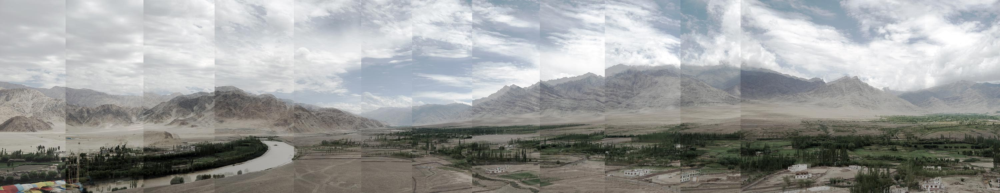

Recall yourself once more:
I insist, into the air.1
“I opened my eyes and saw the cloud. And saw that nothing was perceptible unless I was held at a distance from it by an almost palpable density. And that I saw it and did not see it. Seeing it all the better for remembering the density of air remaining in between. But this resistance of air being revealed, I felt something akin to the possibility of different discovery of myself”.2
Above: Monsoon clouds over Ladakh Valley in the Himalayas, July 2018
“…how we live in the world is contingent upon how we imagine that world to be”.3
Spatial practice, regardless of practitioner, operates on one central claim: space is to be arranged and occupied by one in order to exclude the Other. Accordingly, no two bodies – human, nonhuman, technological, immaterial, material, elemental, or systemic – may occupy the same space at the same time. However, when the materiality of air is taken into consideration, all bodies must recognise and become enlivened by their intimacy with Others. The immersion of beings within the meteorological world does not dissolve one into another, but emphasises their need to co-evolve, empowering the distinctive differences of each to forge new identities, self and collective. In an attempt to define a spatial practice with the monsoon, the spatial practices of the monsoon were revealed, highlighting a need to redefine the self.
Questioning spatial practice
Beyond the seasonal rearrangement of ecologies and social relations, the meteorological material of the monsoon embeds itself within human materiality and affect, creating identities and agencies of difference. Manifest differently across bodies, these differences, or identities, compose a transcorporeal being that transforms and is transformed by the dynamic material world of each encounter. This body-of-many questions the divisions between land, sea, and air that political geography and spatial planning have assumed as permanent, easily observable, and world-defining. Each year, as the monsoon inundates, it co-constructs the lived environments of coexisting bodies, elements, and material relations, a forceful spatial practice. Hastened by a destabilised climate, the twin conditions of volatility and vulnerability project us into the air to reconsider what it means to be human and to live together.
A spatially practicing monsoon
The monsoon’s spatial practices are relational across time and space. The monsoonal environment consists of a world of enlivened flesh, from dragonflies and mangoes to salt farmers and urban residents, whose needs, claims, and actions are determined by their elemental entanglement within the monsoon’s meteorological milieu. Unpredictable and unreliable, the monsoon constructs a meshwork of fragile bodies whose existence relies on the necessary and contingent relations between them. For design practitioners, the monsoonal site must be understood as a meshwork of shifting gradients of meteorological saturation, a kinetic site that requires designers to consider the many exchanges between and across bodies as a collaborating partner of spatial practice. Premised on the idea of material and relational control, both historical and contemporaneous spatial frameworks used to distribute infrastructures and resources neglect to consider the monsoon as co-creative of intra-active co-constituencies.
Weather-worlds and weathering
Reliant on the monsoon’s construction of time, space, and resource, residents of monsoonal lifeworlds require designers to pay attention to the interactions between weather, bodies, and places. However, climate models used by designers use methods of collection and calibration that do not account for the fluxes of local weather-in-action. For spatial practice, weathering, a practice of evolving with Others, prioritises the present-tense of weatherin-action. Registrations of weather-in-action, on both immediate and long-term timescales, represent the design of space by the weather-world itself. In order to pay attention to shifting vulnerabilities and volatilities, model apertures need to be tuned towards highlighting, not occluding, these spacetimes of intra-activity.
“Weathering enables us to talk about the ethics of exposure, necessarily in relation to the political economies of place”.4
Ungrounding
Monsoonal South Asia is home to a diverse landscape of cities. As they evolve or weather, the multivariant configurations of bodies, materials, and elements form and reform into pluralistic sets of identities whose struggle to coexist challenges political and spatial policy. The pervasiveness of the monsoon blurs the boundaries between meteorological and social phenomenon. When seasonal relationships are constructed inconsistently, material precarities induce spatial responses that often enhance differential weathering patterns. Chennai’s annual programme of resurfacing roadways during the dry season for instance has constructed a raised, networked accumulation of asphalt that distributes stormwater runoff directly into homes and businesses. As a result, able residents raise their homes and businesses above the road network, lifting entire buildings onto raised concrete plinths and exacerbating the unevenness of risky grounds
“Impatient capital deploys modes of construction that are predictable and quantifiable, and that often have nothing to do with the climate, landscape or light of a city, among other things”.5
Designed elevational discrepancies between the street and dwellings in Chennai
Volumetrics
Typical urban planning practices of mapping inhibit a practitioner’s ability to see space in time. Of these practices, the statistical calculation of the ‘100-year floodline’ and its two-dimensional application onto city plans produces planning policies and master plans that miscalculate the dynamic relationships between weather and urban materiality. The abstraction of weather dynamics into climatic statistics leads to ineffective zoning regulations. Constructing cities through the amalgamated production of uneven and shifting distributions of risk over time, weather must be understood as a socio-spatial convergence. Urban planners attempt to approximate the material realisation of weather across terrain, but often fail to consider rain as a part of the material world before it enters the surficial flows and inundated grounds on the earth’s surface. To see space in time requires us to account for emergence before planning its inclusion or exclusion from policy and space.
“Most fundamentally, thinking merely straight up and down may blind us to different angles of approach, and the function of the oblique”.6
Conclusion
Through its ability to implode and expand in Cities, assemblages of processual relations, are continually made and remade by the many beings, forces, and materials that live within, surround, and pass through them. For the spatial disciplines and environmental humanities to learn from the monsoon, cities must not be seen as measurable and bounded products of political design and technologies; rather, they must find comfort and agility in dealing with ungrounded and unsettled sites of material and immaterial coherence. As a nonhuman agent of spatial practice, the monsoon’s vibrant and provocative materialisation of a weather-world-in-flux asks us to form a new set of ethics and modes of response that allow us to engage with, not attempt to dominate, its evolution.an atmosphere’s geometry claims vitality. The meteorological intensity of the monsoon demands that the atmosphere be seen not as background, but as a performer in the coconstruction of the ever-engulfing ‘out-there’ that is fuelled by the affective and material instabilities required to balance an ever-dynamic earth.
A summer storm passes over St Thomas Mount in Chennai, July 2017.
1L. Irigaray, Elemental Passions, J. Collie and J. Still (trans.), New York, Routledge, 1992, p. 8.
2L. Irigaray, Elemental Passions, J. Collie and J. Still (trans.), New York, Routledge, 1992, p. 119.
3 A. Neimanis and R.L. Walker, ‘Weathering: Climate Change and the “Thick Time” of Trans-corporeality’, Hypatia: Journal of Feminist Philosophy, vol. 29, no. 3, 2013, p. 563.
4A. Neimanis, A. and J.M. Hamilton, ‘Weathering’, Feminist Review, vol. 118, 2018, p. 83.
5R. Mehrotra, ‘Between Equity and Impatient Capital: Making Indian Cities’, Journal of International Affairs, vol. 65, no. 2, 2012, p. 136.
6S. Elden, ‘Secure the volume: Vertical geopolitics and the depth of power’, Political Geography, vol. 34, 2013, p. 49.
Text by Christina Leigh Geros.
Design by Jonathan Cane.
Introduction
Photographs by Christina Leigh Geros.
Questioning spatial practice
Photographs by Lindsay Bremner.
Video by Lindsay Bremner, edited by Christina Leigh Geros.
A spatially practicing monsoon
Videos by Lindsay Bremner and Beth Cullen, edited by Christina Leigh
Geros.
Weather-worlds and weathering
Photographs by Lindsay Bremner and Christina Leigh Geros.
Ungrounding
Photographs by Lindsay Bremner.
Video by Beth Cullen, edited by Christina Leigh Geros.
Volumetrics
Videos by Lindsay Bremner, edited by Christina Leigh Geros.
Conclusion
Videos by Lindsay Bremner, edited by Christina Leigh Geros.